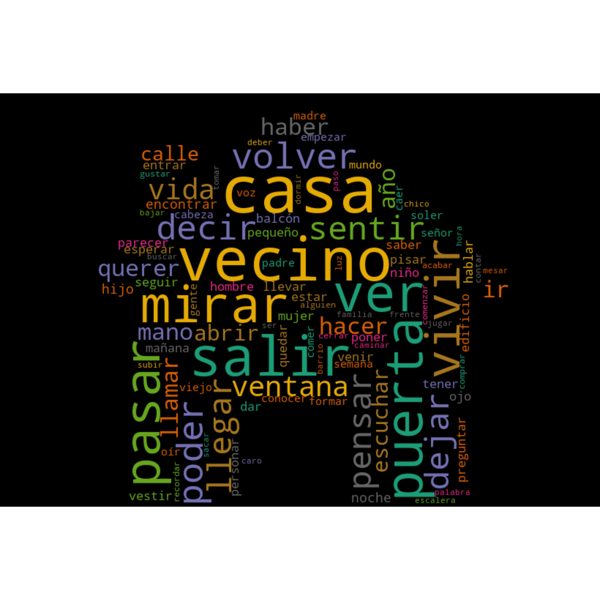

La gran belleza literary text analysis
Posted on Tue 19 May 2020 in misc
Full code for this project can be found here.
Text and network analysis of data from the Spanish language literary magazine La gran belleza. Graphics used for the purposes of promotion on social media.
Output of project
- Word clouds and bar charts (see below) analysing the vocabulary of the short stories. See: instagram post
- Graph of collaboration network. See: instagram post
Input
- 300 short stories written in Spanish with a total of 324733 words submitted to the spring 2020 edition of the magazine.
- List of 160 collaborators and details about which of the 7 magazine issues they worked on.
Tools used:
- python-docx, odfpy, pywin32 and tika for converting documents to plain text
- spacy and gensim for natural language processing
- pandas, matplotlib and wordcloud for plot generation
- networkx and Gephi for the graph analysis and visualization
Notes
The full texts have not been included in this repo for copyright reasons.
Collaboration network
This collaboration network represents the 160 collaborators (authors, illustrators, editors, musicians etc.) who collaborated in the first 7 editions and/or launch parties of the La gran belleza. The edges connect the names of the editions with names of people. The names clustered in the middle collaborated on more than one edition.
The graph was generated using networkX and then visualized using Gephi.

Wordclouds
These wordclouds are made up of the most common words occurring in the 300 short stories submitted to the spring edition of of La gran Belleza, whose theme was 'vecinos' - neighbours. The text was processed by tokenizing and lemmatizing using spaCy and generating bigrams using gensim.


Single word and bigram bar charts
Bar chart representations of the same data represented in the wordclouds above.